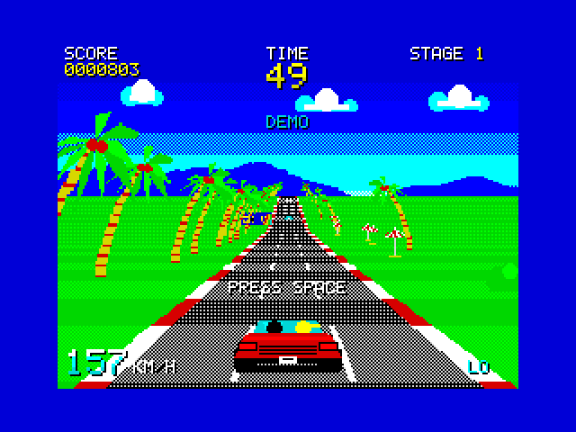
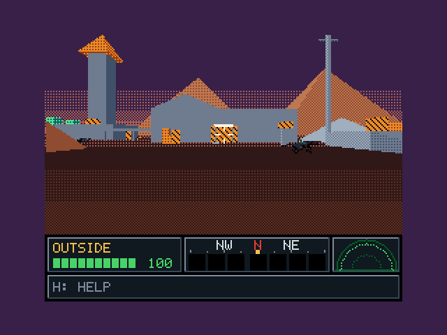
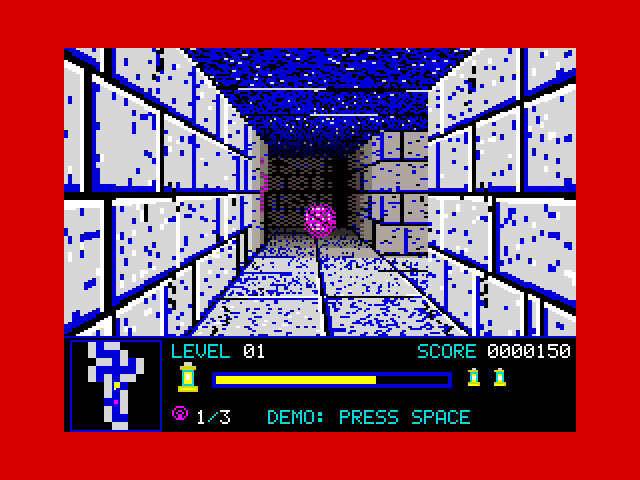
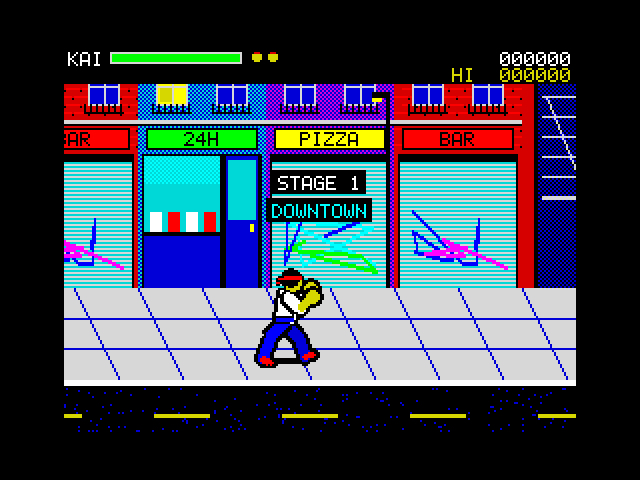
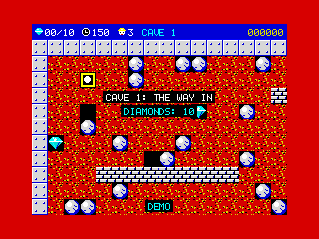
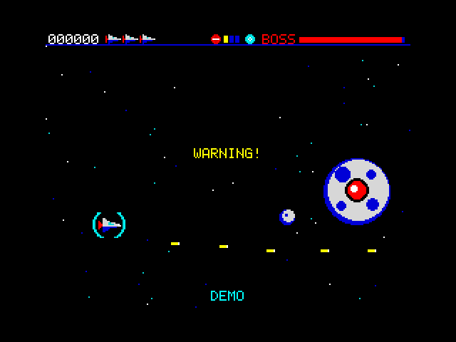
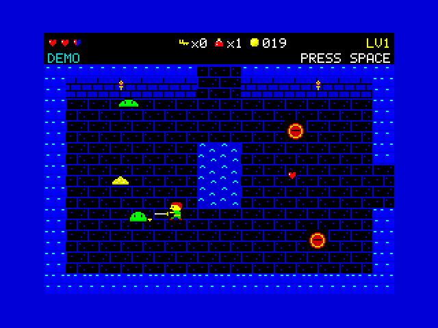
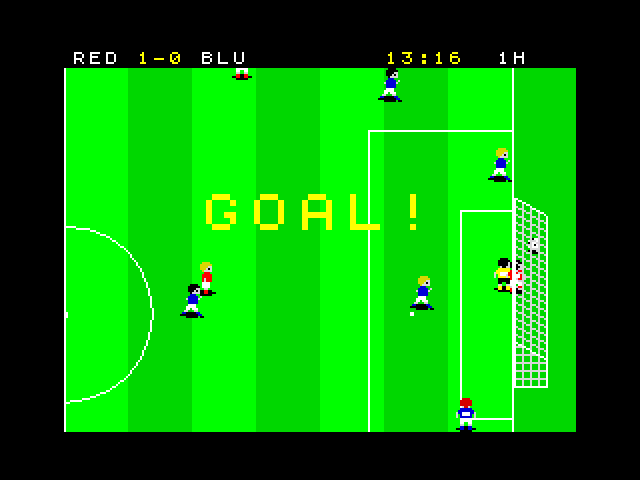
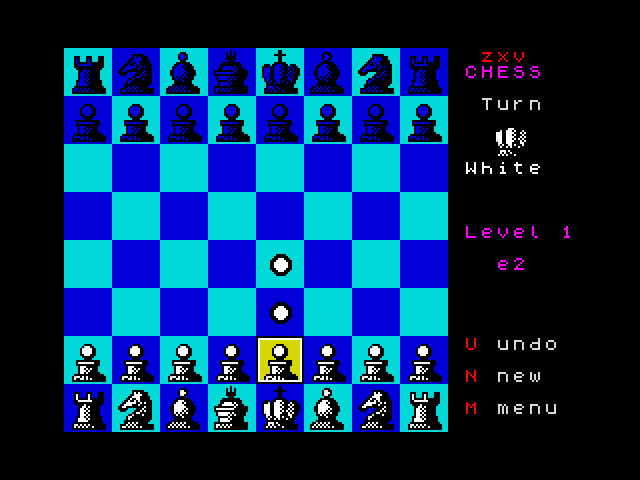
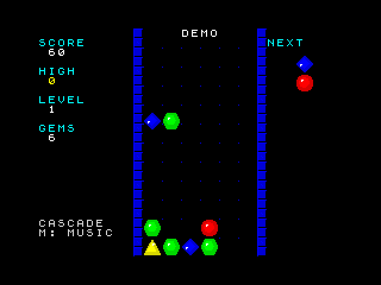

Switch it on.
You're in BASIC.
ZX-V is a new machine in the spirit of the ZX Spectrum — not a clone, not an emulator. Bright colours with no colour clash, two AY chips and twelve sample channels, an SD card for a tape, and a RISC-V heart built from two Raspberry Pi Pico 2.
What a Spectrum fan would have built with today's chips.
It keeps what made the Spectrum special — instant BASIC, bright colours, a machine you can understand whole — and drops the limits that were only there because of 1982's budget.
Colour without clash
Every pixel has its own colour: the Spectrum's palette, or any other, 16 per line from 65,536 (up to 64 on screen). Fades and colour cycling come free.
A real BASIC
Compatible with Sinclair BASIC, with a full-screen editor, procedures, structured loops, sprites, tile maps, scrolling and music.
Two AY chips and samples
Six AY-3-8912 channels and twelve sample channels in stereo, plus the beeper. Music in .zxm, PT3, MOD, XM and more; WAV sounds; AYFX effects.
SD card, not tape
Load and save in an instant. It even reads the Spectrum's .TAP and .TZX files. Games and examples come built into the ROM.
Games come built in.
Type CAT "ROM:" and they're all there, ready to LOAD.
Every one is also an example: its source code is in the repository.
Click one to play it right here, in your browser.

Play
Play
Play
Play
Play
Play
Play
Play
Play
PlayAlso on board: Sentry, Muncher, a platformer and Rock, Paper, Scissors in BASIC; a music player, a demo of the sample channels, a sprite editor and a board test.
Start in BASIC. Go as deep as you like.
Like on the Spectrum, there's BASIC for everyone and "machine code" for the brave — except the machine code is C on a 144 MHz RISC-V.
ZX-V BASIC
Built into the ROM. Type it, RUN it. Errors point at the exact spot.
10 BORDER 0: PAPER 0: CLS 20 PRINT "Hello, I am ZX-V!" 30 FOR i=1 TO 7 40 CIRCLE INK i;128,88,i*10 50 NEXT i
ZX Basic, compiled
Boriel's ZX Basic compiler targets ZX-V: write BASIC on your PC, get native speed.
#include <zxv.bas> GRABSTR 1, 8, "...ee..." PAPER 0: INK 7: BORDER 0 PRINT AT 8, 12; INK 14; "STARDUST"
C with the SDK
RISC-V native programs with GCC, the ROM's sprite and tile engine, and the music player.
#include "zxv_api.h" int main(void) { zxv_cls(7); zxv_print_str("Hello from C!"); while (zxv_key_get() < 0) zxv_wait_vblank(); return 0; }


Two Picos: a CPU and a “ULA”.
One Raspberry Pi Pico 2 runs the RISC-V CPU and BASIC; the other draws the picture and makes the sound, like the Spectrum's ULA.
The board is open hardware (CERN-OHL-W v2): JLCPCB makes it with the small parts already soldered, from the files in the repository, and you solder the two Picos and a few big parts. The board guide.
| CPU | Hazard3 RISC-V (RV32IMAC) at 144 MHz |
|---|---|
| Memory | 248 KB for your programs, plus video RAM |
| Video | HDMI / DVI, 640×480 at 60 Hz · 256×192 with border |
| Sound | 2 × AY-3-8912, 12 sample channels (96 KB, 8-bit or ADPCM) + beeper, stereo over HDMI |
| Storage | microSD, FAT32 · ROM drive with examples |
| Input | USB keyboard, gamepads and mouse |
| Clock | Real-time clock, kept by a coin cell |
| Link | A UART to send programs from the PC and serve the EXT: drive |
- Emulator and ROM with BASICWindows, Linux and the browser
- Each Pico's firmware, tested on a breadboard
- The first board works · November 2026The two Picos together, with
boardtest - Open hardware release of the PCBCERN-OHL-W v2, the KiCad design in pcb/
- The last checkThe clock's coin cell (the microSD card works)
Get the emulator.
Free, with the ROM, the examples and the documentation included.
zxv-windows-x64.zip
LinuxLinux x86-64AppImage or a plain tarball..AppImage · .tar.gz
WebIn the browserPlay now, or download it to use offline.zxv-web.zip
Pico 2FirmwareFor the two Picos of the real machine; later updates, from the microSD card.zxv-uf2.zip
Made with other people's work.
ZX-V is better thanks to them.
ximoKom
Wrote ZXV Chess, the chess game on the ROM disk: against the machine, or for two players. ximoKom also makes ZX Spectrum games.
José Rodríguez (Boriel)
Wrote ZX Basic, the BASIC compiler for the ZX Spectrum that now also makes programs for ZX-V. Petit Soccer and Stardust are written with it.